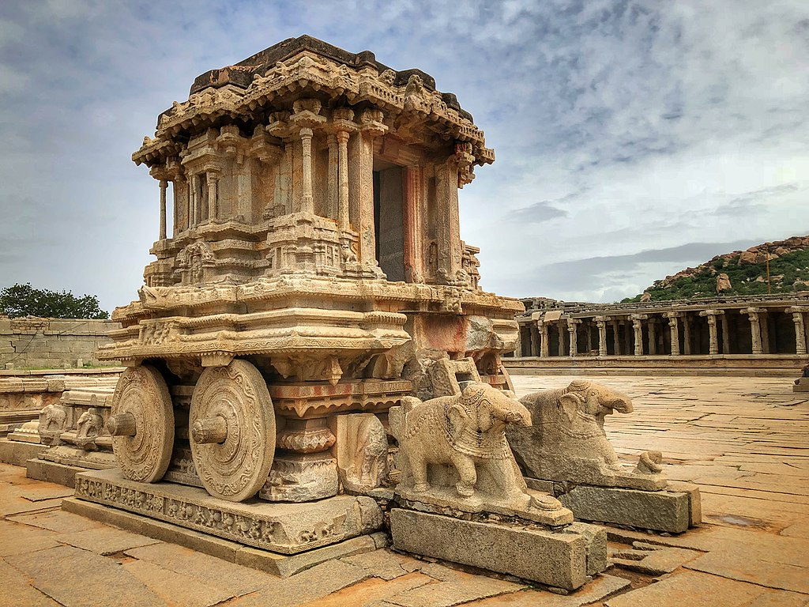

Traveling enriches human life by broadening perspectives, fostering cultural understanding, creating memorable experiences, enhancing personal growth, and providing relaxation and adventure, ultimately contributing to overall well-being and happiness.

Hampi Tourism UNESCO World Heritage
Hampi, a UNESCO World Heritage site in Karnataka, India, is renowned for its stunning ruins and rich history. Once the capital of the Vijayanagara Empire, Hampi is an ancient city with magnificent temples, palaces, and marketplaces, showcasing Dravidian architecture. Key attractions include the Virupaksha Temple, the Vithala Temple Complex with its iconic stone chariot, and the Elephant Stables. The landscape is dotted with boulder-strewn hills, creating a unique and picturesque setting. Hampi's vibrant history, combined with its archaeological treasures and natural beauty, makes it a captivating destination for history enthusiasts and travelers alike. The site offers a glimpse into India's glorious past and the architectural brilliance of its bygone era.
Charminar is a Keeper of Stories and Myths
Charminar, an iconic monument in Hyderabad, India, boasts stunning Islamic architecture. Built in 1591, it's surrounded by bustling markets and offers a glimpse into the city's rich history and culture.
Konark sun temple
The Konark Sun Temple, located in Odisha, India, is a magnificent 13th-century structure dedicated to the Sun God, Surya. Designed in the shape of a colossal chariot, it is adorned with intricate stone carvings depicting scenes from Hindu mythology, celestial beings, and everyday life. The temple, built by King Narasimhadeva I of the Eastern Ganga Dynasty, was once a grand architectural marvel with twelve pairs of stone wheels and seven horses, symbolizing the chariot of the Sun God. The temple's design reflects advanced astronomical knowledge and artistic excellence. Although partially ruined, its grandeur and detailed sculptures continue to draw admiration and scholarly interest, earning it a place as a UNESCO World Heritage Site.